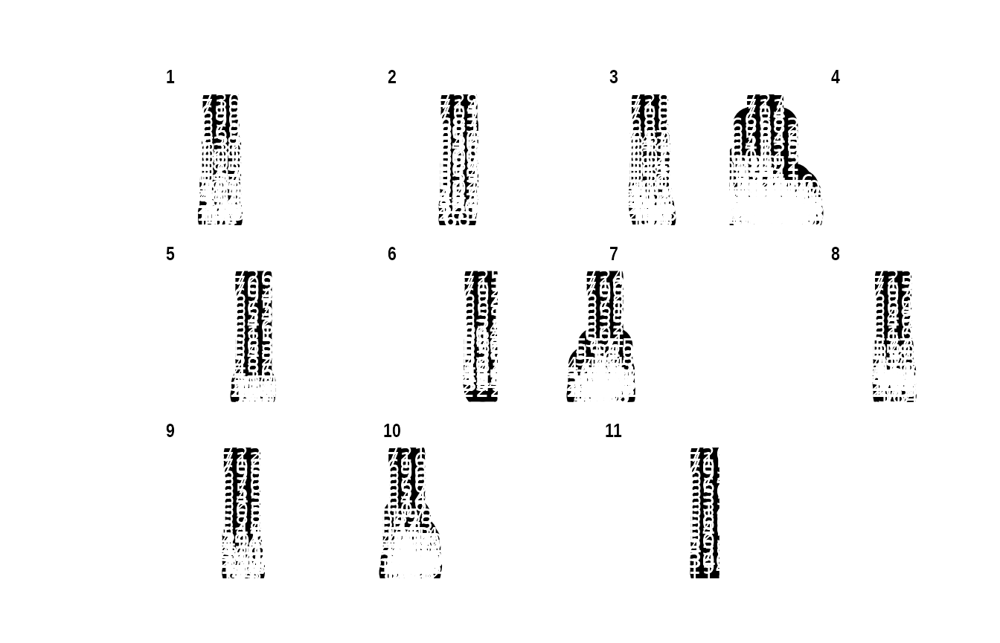

Case study: Partial profiles
Mikkel Meyer Andersen
26 april, 2019
case-study-partial.RmdFirst, the library is loaded:
For reproducibility, the seed for the (pseudo) random number generator is set:
Population simulation
First, the population sizes are determined:

A population can be simulated (hiding progress information) as follows:
set.seed(1) # For reproducibility
sim_res_growth <- sample_geneology_varying_size(
population_sizes = population_sizes,
# VRS = 0.2:
enable_gamma_variance_extension = TRUE,
gamma_parameter_shape = 5,
gamma_parameter_scale = 1/5,
# Live population:
# 3 generations
generations_full = 3,
generations_return = 3,
progress = FALSE)Live population:
Building the pedigrees
Until pedigrees are build/infered, there is not much information available (e.g. about children). So let us infer the pedigrees:
## List of 11 pedigrees (of size 217, 96, 95, 56, 51, 47, ...)## [1] 11## 33 37 21 38 96 47 217 39 56 95 51
## 1 1 1 1 1 1 1 1 1 1 1## [1] 217We can look at the population as a (tidy)graph:
## # A tbl_graph: 730 nodes and 719 edges
## #
## # A rooted forest with 11 trees
## #
## # Node Data: 730 x 4 (active)
## name gens_from_final ped_id haplotype
## <chr> <int> <int> <list>
## 1 727 19 4 <int [0]>
## 2 713 18 4 <int [0]>
## 3 704 17 4 <int [0]>
## 4 688 16 4 <int [0]>
## 5 685 15 4 <int [0]>
## 6 673 14 4 <int [0]>
## # … with 724 more rows
## #
## # Edge Data: 719 x 2
## from to
## <int> <int>
## 1 1 2
## 2 2 3
## 3 3 4
## # … with 716 more rowsThis can be plotted:
if (requireNamespace("ggraph", quietly = TRUE)) {
library(ggraph)
p <- ggraph(g, layout = 'tree') +
geom_edge_link() +
geom_node_point(size = 8) +
geom_node_text(aes(label = name), color = "white") +
facet_nodes(~ ped_id) +
theme_graph()
print(p)
}## Indlæser krævet pakke: ggplot2
This is rather difficult to make any sense of. Let’s instead plot only pedigree 1:
PED_ID <- 1
g_ped2 <- g %>%
activate(nodes) %>%
filter(ped_id == PED_ID)
if (requireNamespace("ggraph", quietly = TRUE)) {
library(ggraph)
p <- ggraph(g_ped2, layout = 'tree') +
geom_edge_link() +
geom_node_point(size = 8) +
geom_node_text(aes(label = name), color = "white") +
theme_graph()
print(p)
}
Run a mutation process
Up until now, only the genealogy has been simulated. Now, we run a mutational process, i.e. assign haplotypes to founders and let haplotypes flow down the individuals.
We use realistic data. In the package, there is information about the individual markers:
## # A tibble: 29 x 5
## Marker Mutations Meioses MutProb Alleles
## <fct> <dbl> <dbl> <dbl> <list>
## 1 DYS438 4 10673 0.000375 <dbl [22]>
## 2 DYS392 8 15418 0.000519 <dbl [22]>
## 3 DYS393 15 14264 0.00105 <dbl [17]>
## 4 DYS437 13 10652 0.00122 <dbl [15]>
## 5 DYS385a 32 26171 0.00122 <dbl [52]>
## 6 DYS385b 32 26171 0.00122 <dbl [52]>
## 7 DYS643 3 2220 0.00135 <dbl [17]>
## 8 DYS448 11 7229 0.00152 <dbl [36]>
## 9 DYS390 33 15612 0.00211 <dbl [19]>
## 10 DYS19 36 16090 0.00224 <dbl [19]>
## # … with 19 more rowsNote, that MutProb is the point estimate given by MutProb = Mutations / Meioses. Information about which markers that are in which kit is also provided:
## # A tibble: 88 x 2
## Marker Kit
## <fct> <fct>
## 1 DYS392 Minimal
## 2 DYS393 Minimal
## 3 DYS385a Minimal
## 4 DYS385b Minimal
## 5 DYS390 Minimal
## 6 DYS19 Minimal
## 7 DYS391 Minimal
## 8 DYS389I Minimal
## 9 DYS389II Minimal
## 10 DYS438 PowerPlex Y
## # … with 78 more rows## # A tibble: 5 x 2
## Kit n
## <fct> <int>
## 1 Minimal 9
## 2 PowerPlex Y 12
## 3 Yfiler 17
## 4 PowerPlex Y23 23
## 5 Yfiler Plus 27Let us take all PowerPlex Y23 markers and assume that we only have a partial profile where DYS437 and DYS448 dropped out. At the same time, we also filter out the integer alleles (for generating random founder haplotypes in a minute):
partial_kit <- ystr_kits %>%
filter(Kit == "PowerPlex Y23") %>%
inner_join(ystr_markers, by = "Marker") %>%
filter(!(Marker %in% c("DYS437", "DYS448"))) %>%
rowwise() %>% # To work on each row
mutate(IntegerAlleles = list(Alleles[Alleles == round(Alleles)]),
MinIntAllele = min(IntegerAlleles),
MaxIntAllele = max(IntegerAlleles)) %>%
ungroup() %>%
select(-Kit, -Alleles)
partial_kit## # A tibble: 21 x 7
## Marker Mutations Meioses MutProb IntegerAlleles MinIntAllele
## <fct> <dbl> <dbl> <dbl> <list> <dbl>
## 1 DYS438 4 10673 3.75e-4 <dbl [14]> 5
## 2 DYS392 8 15418 5.19e-4 <dbl [14]> 6
## 3 DYS393 15 14264 1.05e-3 <dbl [12]> 7
## 4 DYS38… 32 26171 1.22e-3 <dbl [23]> 6
## 5 DYS38… 32 26171 1.22e-3 <dbl [23]> 6
## 6 DYS643 3 2220 1.35e-3 <dbl [13]> 4
## 7 DYS390 33 15612 2.11e-3 <dbl [14]> 17
## 8 DYS19 36 16090 2.24e-3 <dbl [12]> 9
## 9 DYS391 38 15486 2.45e-3 <dbl [12]> 5
## 10 DYS38… 42 14339 2.93e-3 <dbl [9]> 9
## # … with 11 more rows, and 1 more variable: MaxIntAllele <dbl>This “partial kit” has the following mutation probabilities:
## [1] 0.0003747775 0.0005188740 0.0010515984 0.0012227274 0.0012227274
## [6] 0.0013513514 0.0021137586 0.0022374145 0.0024538293 0.0029290746
## [11] 0.0030266344 0.0036747818 0.0037541061 0.0041229909 0.0042882833
## [16] 0.0043338286 0.0050205386 0.0054475439 0.0063641395 0.0133475707
## [21] 0.0147194112We can make a founder haplotype generator as follows (sampling alleles randomly is not how Y-STR works, but it may work fine for founder haplotypes):
generate_random_haplotype <- function() {
partial_kit %>%
rowwise() %>%
mutate(Allele = IntegerAlleles[sample.int(length(IntegerAlleles), 1)]) %>%
pull(Allele)
}Now, a new haplotype is created everytime the function is called (with no arguments):
## [1] 15 7 10 6 15 14 23 18 5 12 15 10 15 36 11 13 19 6 14 23 21## [1] 14 7 17 9 10 7 17 17 14 12 20 9 10 36 23 29 33 14 20 11 20Of course such generator can also be created for a reference database with Y-STR profiles.
Now, we are ready to assign haplotypes to the genealogy:
set.seed(1)
pedigrees_all_populate_haplotypes_custom_founders(
pedigrees = pedigrees,
get_founder_haplotype = generate_random_haplotype,
mutation_rates = mu,
progress = FALSE)We can now plot pedigrees with haplotype information (note that as_tbl_graph needs to be called again):
g_ped2 <- as_tbl_graph(pedigrees) %>%
activate(nodes) %>%
filter(ped_id == PED_ID) %>%
group_by(name) %>%
mutate(haplotype_str = paste0(haplotype[[1]], collapse = ";"))
#mutate(haplotype_str = map(haplotype, paste0, collapse = ";")[[1]])
if (requireNamespace("ggraph", quietly = TRUE)) {
library(ggraph)
p <- ggraph(g_ped2, layout = 'tree') +
geom_edge_link() +
geom_node_point(aes(color = haplotype_str), size = 8) +
geom_node_text(aes(label = name), color = "white") +
theme_graph()
print(p)
}## Ungrouping graph...
Counting matches
We have live_pop from the population.
Drawing an individual and counting matches
set.seed(5)
Q_index <- sample.int(n = length(live_pop), size = 1)
Q <- live_pop[[Q_index]]
print_individual(Q)## pid = 72 with father pid = 178 and no children## [1] 15 13 13 24 6 11 27 17 10 16 11 9 5 24 13 23 28 10 23 14 17Now, count matches in live part of pedigree and in live part of population:
Q_ped <- get_pedigree_from_individual(Q)
ped_live_matches <- count_haplotype_occurrences_pedigree(
pedigree = Q_ped,
haplotype = Q_hap,
generation_upper_bound_in_result = 2) # gen 0, 1, 2
pop_live_matches <- count_haplotype_occurrences_individuals(
individuals = live_pop,
haplotype = Q_hap)
ped_live_matches## [1] 33## [1] 33We can also inspect pedigree matches information about number of meioses and \(L_1\) distances:
path_details <- pedigree_haplotype_matches_in_pedigree_meiosis_L1_dists(
suspect = Q,
generation_upper_bound_in_result = 2)## [1] 33## meioses max_L1 pid
## [1,] 4 0 300
## [2,] 5 0 181
## [3,] 6 0 80
## [4,] 6 0 94
## [5,] 6 0 98
## [6,] 6 0 120This can of course be repeated to many populations (genealogies, haplotype processes, suspects etc.). Also note that variability can be put on mutation rates, e.g. by a Bayesian approach.